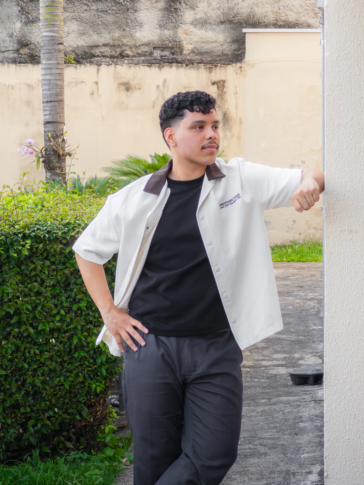

Provisório
Aqui entra a história do Samuel, contada por ele: formação, como começou, por que escolheu trabalhar com marcas e o que o move até hoje.
Aguardando o texto ou o áudio do Samuel. Nada nesta seção foi inventado.
Sobre
Sou designer e estrategista de marca. No Samuel Cipriano Studio, trabalho com negócios autorais do Vale do Paraíba, da Serra da Mantiqueira e de todo o Brasil.
Aqui entra a história do Samuel, contada por ele: formação, como começou, por que escolheu trabalhar com marcas e o que o move até hoje.
Aguardando o texto ou o áudio do Samuel. Nada nesta seção foi inventado.
A estratégia, baseada em dados, estudos e pesquisas, dá origem a uma identidade verbal e visual que a traduz para o cliente final.
Começo pelo que acontece no seu negócio: preço, público, expansão. A marca é a resposta, não o ponto de partida.
O manifesto do estúdio vale para o meu trabalho e para os negócios com quem escolho trabalhar: gente que trata o produto como ofício.

Do Vale do Paraíba e da Serra da Mantiqueira para todo o Brasil, com atendimento remoto. O estúdio fica no Vale; os projetos vão aonde o negócio está.
Vamos conversar.